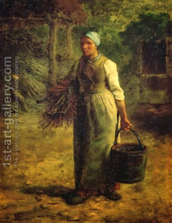

Yoma 39 - He snatched the lot from the lottery box
The High Priest would snatch the lots from the lottery box, with two hands, and then raise the hand which had the "for God" inscription. In the other hand he held the lot "for Azazel." He then placed the lot on the appropriate goat and pronounce "For God." The people would again answer, "Blessed is the name of the glory of His kingship, forever and ever." Why did he have to snatch, and not just take the lots? - So that he did not intentionally direct his right hand to the one marked "For God."
For the forty years of Shimon the Rightoues the lot "For God" always came up in the right hand of the High Priest. After his death at times it came in the right hands of the High Priest, but at times in the left. So too, during his tenure the fire on the Altar was strong and never extinguished; even so, the priests continued to bring their two blocks of wood, but it was only to fulfill the mitzvah.
For forty years prior to the destruction of the Temple the lot "For God" would never come up in the right hand of the High Priest, the tongue of crimson wool would not whiten on Yom Kippur, and the doors of the Sanctuary would open on their own - until Rabbi Yochanan ben Zakkai rebuked them, saying that it is enough for the misfortune to come in its time.
Art: Woman Carrying Firewood and a Pail by Jean-Francois Millet